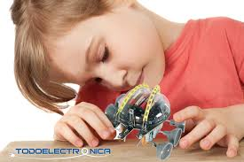

PLANES DE ESTUDIO
BÁSICOS (PLAN DIARIO)
Inscripción: Q250.00
Mensualidad: Q190.00
DIVERSIFICADO (PLAN DIARIO)
Inscripción: Q300.00
Mensualidad: Q265.00
DIVERSIFICADO (PLAN SABATINO)
Inscripción: Q175.00
Mensualidad: Q160.00
CARRERAS
SECRETARIADO BILINGÜE EN COMPUTACIÓN:
En esta carrera las estudiantes mejoran sus habilidades de comunicación verbal y escrita, tanto en su lengua materna como el inglés, de mecanografía, TIC, y habilidades de transcripción taquigráfica. La capacidad de redactar documentos con iniciativa propia, Atención al detalle a la hora de traducir documentos. Fuertes habilidades de organización, para planificar y priorizar su carga de trabajo.
Duración: 3 años.
BACHILLERATO EN COMPUTACIÓN:
Esta carrera se lleva a cabo en el marco de una educaciónn permanente que permite la continuidad de los estudios en el nivel superior. Los(as) graduandos(as) de esta carrera poseen los conocimientos en el uso de la tecnologína, y resoluciónn de problemas relacionados con las ciencias, las letras y la vida cotidiana. Por ello se insiste en el desarrollo de habilidades y destrezas que pueden ser utilizadas y adaptadas en distintos contextos de la vida como ciudadano, en lo laboral, lo familiar, lo académico, vinculándolas con los procesos de resolución de problemas y las capacidades emprendedoras de los y las estudiantes.
Duración: 2 años.
PERITO CONTADOR EN COMPUTACIÓN:
La carrera de perito contador se basa en llevar un orden contable de empresas, industrias, etc., también es una carrera muy completa ya que es de muy buena base para dar ingresos la cual complementa cualquier carrera que uno decida seguir en la universidad. Es que es una carrera bastante comercial y muy bien conocida. Los graduados de esta carrera poseen los conocimientos en el manejo eficiente de la contabilidad, las leyes fiscales y aduanales vigentes en forma interactiva, uso de la tecnología, y la resolución de problemas relacionados con operaciones contables, el registro e interpretación de las operaciones de orden económico que se producen en todas las actividades de servicios, comerciales y productivas, individuales y colectivas. Desempeñar cargos en administrativos y asesorías en contabilidad, finanzas y la tibutación.
Duración: 3 años.
PERITO EN ADMINISTRACIÓN DE EMPRESAS
En esta carrera el estudiante aprende a ser coordinador y director de los esfuerzos encaminados a alcanzar el objetivo de la empresa. óptimo aprovechamiento de sus recursos para mejorar la calidad, competitividad y eficiencia de la empresa. Conduce la empresa en base a disponibilidad de información tanto interna como externa a la empresa, la cual analiza y en base a ella determinar una línea de acción y prevé futuras situaciones, con la finalidad de desarrollarla y promoverla en el mercado. La información externa a la empresa que requiere es de tipo económico, social, legal, político y tecnológico, para hacer un diagnóstico e interpretación de la situación de la empresa en el medio ambiente donde se desenvuelve. Y también factores más específicos de su interés como es información de sus proveedores, clientes, grupos de presión y competencia.
Duración: 3 años.
BACHILLERATO EN DISEÑO GRÁFICO ASISTIDO POR COMPUTADORA (PLAN DIARIO)
La carrera de Bachillerato en Ciencias y Letras con Orientación en Diseño Gráfico es la base para una educación permanente, es decir, proporciona a los y las estudiantes la posibilidad de continuar con sus estudios en el nivel superior en alguna de las especialidades que la Universidad ofrece hoy día, siempre y cuando se haya desarrollado en ellos y ellas las herramientas básicas de autoaprendizaje. Si por algunos factores los y las estudiantes no pueden continuar con los estudios, el Bachillerato con orientación en alguna de las áreas técnicas debe propiciar una formación Terminal en los campos de las artes, ciencias naturales, ciencias sociales, matemáticas, vinculándolas, de alguna manera, con la economía y el mundo laboral. Por ello se insiste en el desarrollo de habilidades y destrezas que puedan ser utilizadas y adaptadas en distintos contextos de la vida como ciudadano, en lo laboral, lo familiar, lo académico, con los procesos de resolucián de problemas y las capacidades emprendedoras de los y las estudiantes. Desde este punto de vista el Bachillerato en Ciencias y Letras con Orientación en Diseño Gráfico se conjuga con la formación general para proporcionar a los y las estudiantes elementos básicos en el campo de la especialidad, diseñar proyectos y materiales visuales que transmitan mensajes importantes y reflejen conocimientos específicos con respecto al uso del colorido y al impacto social que puedan tener. El graduado de esta carrera está capacitado para actuar como diseñador de páginas web, asistente de diagramador de textos, ilustrador, entre otros trabajos similares.
Duración: 2 años.
DIPLOMADOS
DISEÑO GRÁFICO Y PÁGINAS WEB
DISEÑO Y CONFIGURACIÓN DE REDES
ELECTRÓNICA DIGITAL Y ROBÓTICA ELEMENTAL

FUNDAMENTOS DE BASES DE DATOS
{kind=link}
{kind=link}
{kind=link}
{kind=link}